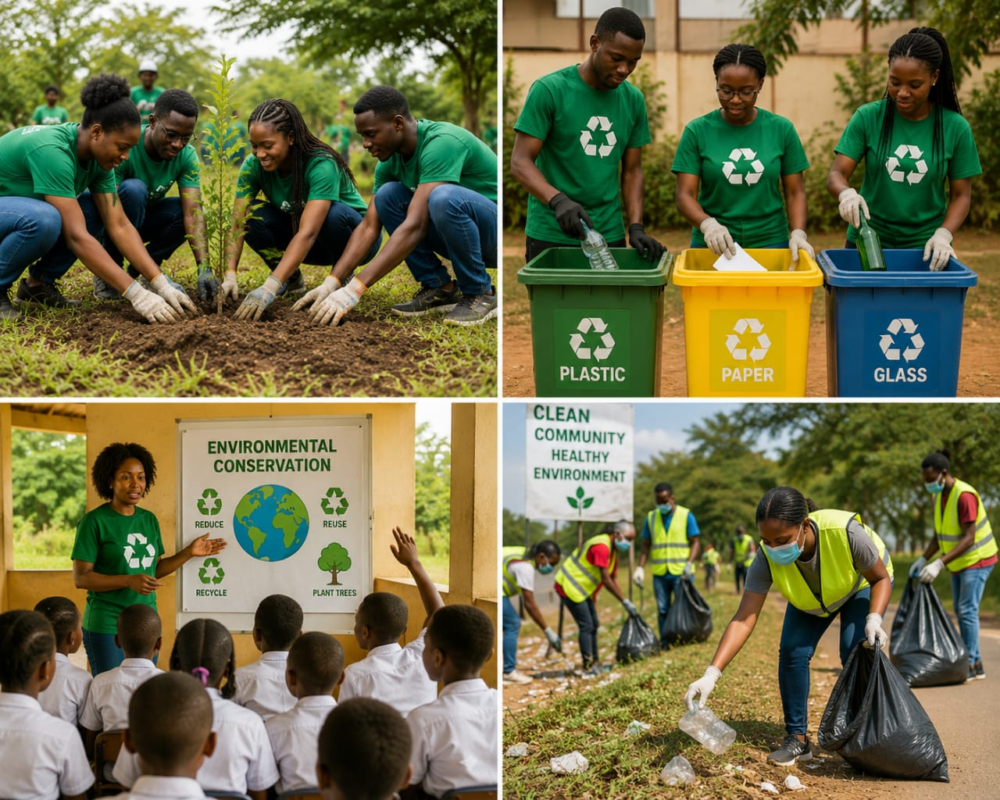

GREEN LIFE COMMUNITY
Green Choices Today, Healthy Tomorrows
Green Choices Today, Healthy Tomorrows
Practical environmental solutions for communities.

✅TREE PLANTING & CONSERVATION: We organize tree-planting activities and promote the protection of green spaces. We work with schools, communities and local leaders to plant indigenous and fruit trees, restore degraded land and teach people how to care for and protect trees for future generations.
✅ENVIRONMENTAL EDUCATION: We conduct awareness activities in schools and communities on conservation, sanitation and climate action. Through workshops, talks and community meetings, we help people understand the importance of protecting the environment and encourage them to adopt simple, everyday habits that keep our surroundings clean and healthy.
✅WASTE MANAGEMENT & RECYCLING: We educate households and institutions about waste segregation, safe disposal and recycling. We teach families how to separate plastic, organic and general waste, reuse materials where possible and reduce pollution in our homes, markets and public spaces.
✅COMMUNITY CLEAN-UP CAMPAIGNS: We mobilize volunteers to clean public spaces and encourage communities to maintain clean, safe and healthy surroundings. Our clean-up campaigns bring people together to clear drainage channels, collect litter, beautify public areas and promote a culture of responsibility and pride in our community.